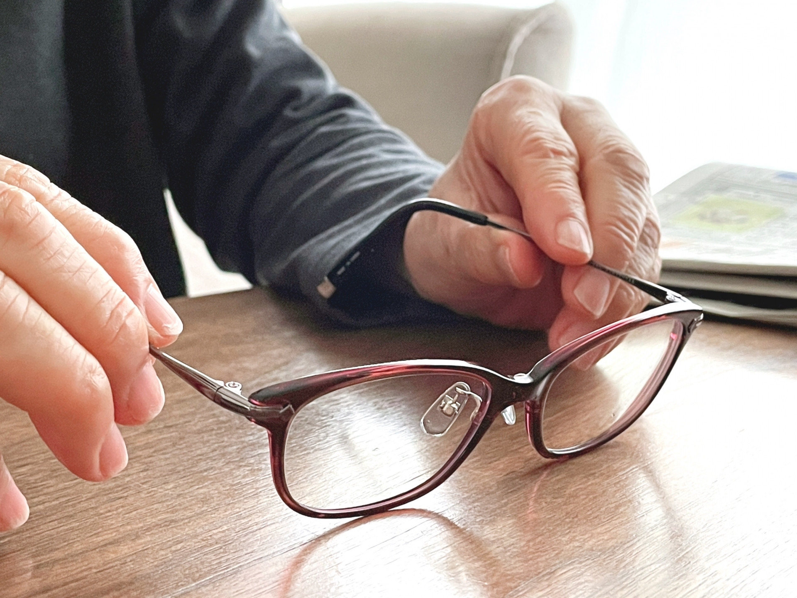

診療内容

一般眼科
一般眼科に多い疾患をご紹介いたします。

眼精疲労
目を使いすぎることで、眼痛・かすみ・充血などの症状や、頭痛・肩こり・吐き気といった全身症状が現れることがあります。必要に応じて治療や眼鏡・コンタクトの調整を行います。作業中はこまめに休憩を取り、点眼薬（ビタミン剤など）による治療を行うこともあります。

老視(老眼)
加齢によりピント調節機能が低下し、遠くや近くが見えにくくなる状態を老視といいます。当院では、調節機能をスクリーニングできる検査機器（TONOREF®Ⅲ Plus）を導入しています。治療は、近用眼鏡（老眼鏡）の使用が基本となります。
ドライアイ
パソコンやスマートフォンの使用により、目の疲れや不快感を訴える方が増えています。その原因の一つに、涙の量や質の低下によって目が乾く「ドライアイ」があります。治療には点眼や涙点プラグの使用、生活環境の見直し（加湿や画面の見すぎを避ける）などがあります。